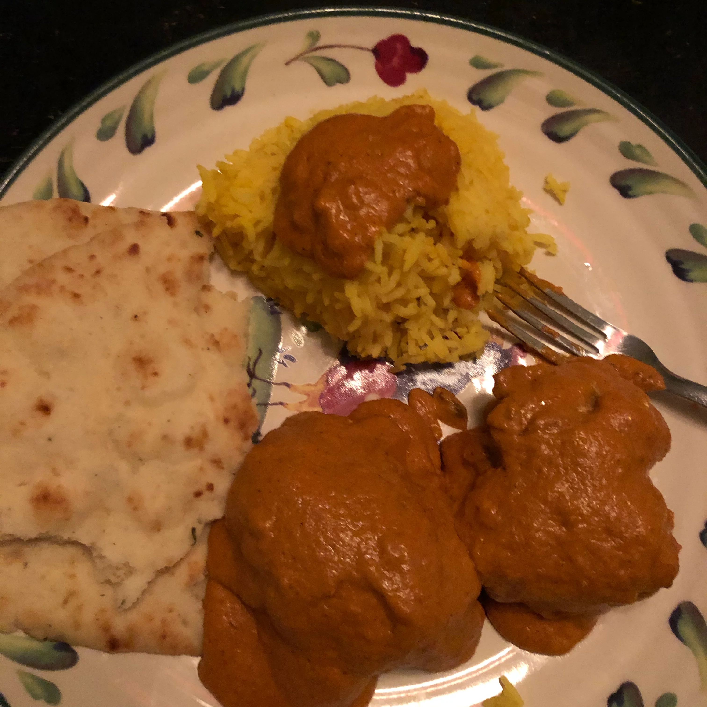

Butter Chicken

Description
Noodles with a spicy Peanut sauce!
Ingredients
- 1 (9 ounce) package dried udon noodles
- ½ cup chicken broth
- 1 ½ tablespoons minced fresh ginger root
- 3 tablespoons soy sauce
Steps
- Bring a large pot with lightly salted water to a rolling boil.
Drop the udon in a few noodles at a time and return to a boil.
- While the udon noodles are cooking, whisk the chicken broth, ginger,
soy sauce, peanut butter, honey, chile oil, and
garlic in a saucepan over medium-high heat.